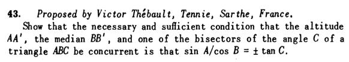
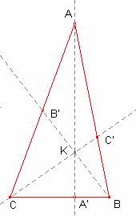

Problema 292
Propuesto por Juan Bosco Romero Márquez, profesor colaborador de la Universidad de Valladolid.
Problema 292.

43.
Mostrar que la condición necesaria y suficiente para que la altura AA',
la mediana BB' y una de las bisectrices del ángulo C de
un triángulo ABC sean concorrentes es que sen A /cos B = + o - tang C.
Thébault, V. (1949): Mathematics Magazine. Vol. 23, No. 2, Nov. - Dec., 1949, p. 103
Nota del editor: Este problema se publica, aunque ya se ha publicado el 262 de esta revista que es idéntico, por el motivo de que
la igualdad de Thebault no fue la solución de Damián Aranda ni de José María Pedret ni de Maite Peña, resolutores del problema.

Solución de Ricard Peiró:a) Supongamos que B es un ángulo agudo.
Aplicando el teorema de Ceva,  ,
,
 ,
,  (bisectriz interior) son
3 cevianas. Les cevianas se cortan si y sólo si .
(bisectriz interior) son
3 cevianas. Les cevianas se cortan si y sólo si .
Aplicando la propiedad de la bisectriz:
Por ser B’ punto medio del lado  ,
,  .
.
Aplicando razones trigonométricas al triángulo rectángulo :

 ,
,  ,
,  (bisectriz
interior) s’intersecten si y solamente si
(bisectriz
interior) s’intersecten si y solamente si 
 .
.
Aplicando el teorema de los senos  y teniendo en cuenta que .
y teniendo en cuenta que .
 ,
,  ,
,  (bisectriz
interior) se cortan si solamente si
(bisectriz
interior) se cortan si solamente si  ,
,
si y solamente si,  .
.
b) Supongamos que B es obtuso
Siga  (bisectriz exterior)
C’ en la prolongación del lado
(bisectriz exterior)
C’ en la prolongación del lado
 ,
,  ,
,  s’intersecten
si y solamente si . (ver nota final)
s’intersecten
si y solamente si . (ver nota final)
Aplicando la propiedad de la bisectriz:
Por ser B’ punto medio del lado  ,
,  .
.
Aplicando razones trigonométricas al triángulo rectángulo :
 .
.
 ,
,  ,
,  (bisectriz
exterior) se cortan si y solamente si
(bisectriz
exterior) se cortan si y solamente si 
 .
.
Aplicando el teorema de los senos  y teniendo en cuenta que .
y teniendo en cuenta que .
 ,
,  ,
,  (bisectriz
exterior) se cortan si y sólo si
(bisectriz
exterior) se cortan si y sólo si  ,
,
 si i solamente si,
si i solamente si,  .
.
Nota:
 (exterior
al triángulo) A’ en la recta BC,
(exterior
al triángulo) A’ en la recta BC,
 (interior
al triángulo) B’ en
(interior
al triángulo) B’ en  ,
,
 (exterior
al triángulo) C’ en la recta AB
(exterior
al triángulo) C’ en la recta AB
 ,
,  ,
,  s’intersecten
si y sólo si .
s’intersecten
si y sólo si .
Demostración:
Supongamos que las rectas AA’, BB’, CC’
se cortan en un punto K
Dos triángulo que tienen la misma altura las áreas
son proporcionales a las bases.
Multiplicando las tres igualdades:

Sean los puntos A’ de la recta BC, C’ de la recta AB tal que:
(1)
Sea K el punto intersección de  .
.
Sea la recta r que pasa por los puntos B, K que talla el lado  en D
en D
Veamos que D es igual a B’
y
se cortan en K entonces, (2)
Igualando las expresiones (1), (2),
Los puntos D, B’ pertenecen al lado y dividen el lado en la misma razón, por
tanto D i B’ coinciden.
Por tanto,  ,
,  ,
,  se cortan.
se cortan.